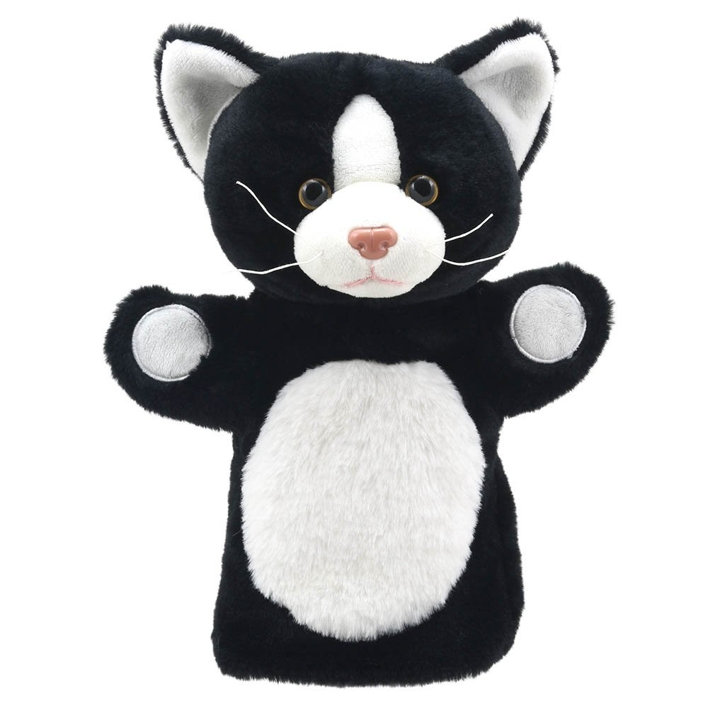

<!DOCTYPE html>
<html lang="en">
<head>
    <meta charset="UTF-8">
    <meta http-equiv="X-UA-Compatible" content="IE=edge">
    <meta name="viewport" content="width=device-width, initial-scale=1.0">
    <title>York-York</title>
    <style>
        .volver{
            display: flex;
            flex-direction: row;
            justify-content:flex-end;
            align-items: flex-start;
        }
    </style>
    <body style="background-color: #66ccff;">
    </body>
</head>
<body>
    <div class=volver><a href="paggatos.html">volver a la pagina de gatos</a></div>
    <br>
    <br>
    <div>
        
        <br>
        <font size="4">
            <div>Edad: 7 años</div>
            <br>
            <div>Genero: Macho</div>
            <br>
            <div>Esterilizado: Si</div>
            <br>
            <div>Numero chip: 5646556</div>
            <br>
            <div>York-York es bastante alegre y cariñoso, la primera vez que lo conozcan sera timido, 
                pero con tiempo y amor lograran llegar a su corazón</div>
        </font>        
    </div>
    
    
</body>
</html>